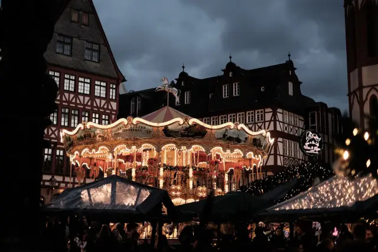
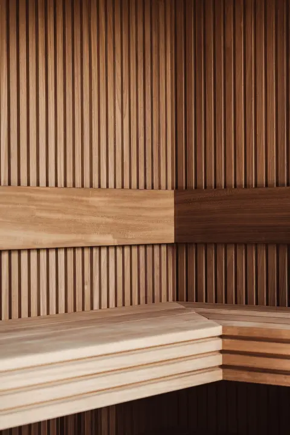

Angebot · 3 Nächte
Seezeit zu zweit
Frühstück am Steg, ein Abend in der Seesauna und das Ruderboot für die Fahrt zur Vogelinsel.
- Frühstück
- Seesauna
- Ruderboot
- Late Check-out
ab 498 € für zwei
Anfragen: Seezeit zu zweitKapitel 1 von 11
Wenige Bausteine, die sich kombinieren lassen, statt einer Utility-Matrix: Die meisten passen sich über Container Queries an den Platz an, den sie bekommen, nicht an die Fensterbreite. Mit dem Inspect-Knopf unten rechts (oder Alt+I) lässt sich jeder Block anklicken und sein Code ansehen.
Tipp: Fenster schmaler ziehen oder an den gestrichelten Rahmen ziehen
.ncss-container ist die zentrierte, breitenbegrenzte Spalte mit Seitenabstand – und zugleich der Bezugsrahmen für alle Container Queries darin. --narrow ergibt die angenehme Lesebreite für Fließtext.
Achtung: .ncss-container--narrow nur zusammen mit .ncss-container verwenden – allein ist es nicht zentriert, und Ausbrech-Klassen darin brechen schief aus.
.ncss-container – höchstens 75rem breit, mittig, mit fließendem Seitenrand.ncss-container .ncss-container--narrow – höchstens 45rem, für LesetextAlle Abstands-Tokens sind clamp()-Werte: Sie wachsen mit der Fensterbreite zwischen einem Minimum und einem Maximum, ganz ohne Breakpoints. Dieselbe Skala steckt hinter gap von Stack/Grid und den wenigen Abstands-Utilities.
Tipp: Fenster schmaler ziehen – die Balken schrumpfen stufenlos.
3xs2xsxssmmdlgxl2xl.ncss-stack stapelt Kinder senkrecht mit gleichmäßigem Abstand (statt Margins an jedem Element), .ncss-cluster reiht sie waagrecht und bricht von selbst um – für Schlagwörter, Buttons, Metadaten.
Angebot · 3 Nächte
Frühstück am Steg, ein Abend in der Seesauna und das Ruderboot für die Fahrt zur Vogelinsel.
ab 498 € für zwei
Anfragen: Seezeit zu zweitFür alles, was weder Stapel noch fließende Gruppe ist: eine Zeile mit Abstand, auf Wunsch zentriert, verteilt oder umbrechend. .ncss-flex-1 lässt ein Kind den Restplatz füllen, .ncss-flex-auto hält es auf Inhaltsbreite.
Der Standardweg für Kachel-Raster: Die Spaltenzahl ergibt sich aus dem Platz und der Mindestbreite pro Spalte – keine einzige Media Query. Die Mindestbreite ist ein Parameter direkt am Element.
Gut zu wissen: Karten werden automatisch gleich hoch; --align-start schaltet das ab. --ncss-grid-max verhindert zu breite Spalten bei wenigen Kacheln.
Fenster schmaler ziehen: 4 → 3 → 2 → 1 Spalte

24 m² · Gartenseite · ab 149 €

28 m² · Balkon zum See · ab 189 €

38 m² · bis 3 Personen · ab 239 €

52 m² · zwei Räume · ab 289 €
Wenn die Redaktion „genau vier nebeneinander“ will: --cols-2/3/4/6 schalten ab einer festen Container-Breite auf die gewünschte Spaltenzahl und darunter auf eine Spalte. Gemessen wird der umgebende .ncss-container, nicht das Fenster.
Achtung: braucht einen Vorfahren mit .ncss-container. Spannweiten (.ncss-col-span-2 …) lieber im Bento-Raster nutzen – dort fallen sie bei Platzmangel sauber weg.
Am Griff unten rechts ziehen: unter 48rem Rahmenbreite eine Spalte
 Rathaus
Rathaus Wochenmarkt
Wochenmarkt Wanderwege
WanderwegeDer eine Fall, den ein Grid nicht kann: Bei fünf Kacheln in Dritteln soll die unvollständige letzte Zeile mittig stehen. Jede Breiten-Klasse reagiert per Container Query selbst auf die Breite des Flex-Grids – eine Klasse pro Bruch, kein „Klasse × Breakpoint“-Raster.
 Kirche am See
Kirche am See Bootshafen
Bootshafen Marktplatz
Marktplatz
Adventsmarkt Uferpromenade
UferpromenadeKacheln unterschiedlicher Größe in einem Raster: Einzelne Kacheln wachsen per .ncss-col-span-2 / .ncss-row-span-2, grid-auto-flow: dense füllt die Lücken. Ist das Raster zu schmal für eine Spannweite, fällt sie weg statt überzulaufen.
Achtung: dense ändert nur die sichtbare Reihenfolge, nicht die Tab-Reihenfolge. Fertige Anordnungen ohne Klassen an den Kacheln: --hero und --mosaic im Kapitel Moderne UI.

Seesauna, Dampfbad und ein Panoramabad mit 28 Grad.


Aufgüsse um 15, 17 und 19 Uhr.

Heubäder und Massagen auf Anfrage.
Bilder unterschiedlicher Höhe lückenlos gestapelt – überall per CSS-Spalten, in Browsern mit display: grid-lanes (Safari 26.4+) automatisch als echtes, zeilentreues Masonry.
Achtung: Im Spalten-Fallback läuft die Lesereihenfolge spaltenweise – gut für Galerien, nicht für Inhalte mit fester Reihenfolge.


Bausteine fragen die Breite ihres Containers ab, nicht die des Fensters: Dieselbe Karte steht in der breiten Hauptspalte nebeneinander und in einer schmalen Seitenleiste gestapelt. Sichtbarkeit lässt sich genauso an die Container-Breite koppeln.
Schwellen überall gleich: sm 24rem, md 36rem, lg 48rem, xl 56rem. Für eigene Regeln: @container ncss-container (min-width: …).
Rahmen schmaler ziehen: ab 32rem nebeneinander, Hinweis wechselt bei 36rem
Sa 28.11. · ab 14 Uhr
Glühwein vom Fischerverein, Krippenspiel um 17 Uhr und das alte Karussell auf dem Marktplatz.
Ein Abschnitt reicht bis an beide Bildschirmränder, obwohl er im Markup im Container bleibt – ideal für Bildbänder und farbige Flächen. Innen wieder .ncss-container, damit der Text in der Spalte bleibt.
Achtung: rechnet mit 100vw – jeder Vorfahre muss mittig sitzen (wie hier).

Seeburger See
Bademäntel liegen bereit, das Wasser hat im Sommer 22 Grad, und der Steg gehört nur unseren Gästen.
Gezielt nur zu einer Seite bis zum Bildschirmrand (-start/-end), ab der Mitte der Spalte (-half-…) oder symmetrisch um einen festen Betrag (-center). Bringt Rhythmus in lange Textseiten.
Gut zu wissen: .ncss-bleed-center braucht keinen zentrierten Vorfahren – es wächst relativ zum eigenen Elternelement um --ncss-bleed-amount.
Was 1912 als Fischerwirtschaft mit drei Gästezimmern begann, ist heute ein Haus mit 32 Zimmern. Geblieben sind der Steg, die Ruderboote und die Gewohnheit, morgens zuerst aufs Wasser zu schauen.
„Der See entscheidet, wie der Tag wird. Wir richten nur das Frühstück.“
Die Zitat-Fläche oben reicht nach links bis an den Bildschirmrand, rechts bleibt sie in der Spalte. Das Bild unten macht es umgekehrt.

.ncss-bleed-end – bis zum rechten RandHalbes Ausbrechen beginnt in der Mitte der Spalte und endet am Bildschirmrand – gut für ein Bild, das neben dem Text „hinausläuft“.
.ncss-bleed-half-endUnd wenn ein Element nur ein wenig breiter als der Text sein soll:

.ncss-bleed-center, je Seite um --ncss-space-md breiterText fließt um ein Bild – dafür ist float bis heute das richtige Werkzeug. NativeCSS floatet erst, wenn der Container mindestens 28rem breit ist; darunter wird das Bild ein normaler Block, statt den Text in eine schmale Restspalte zu quetschen. .ncss-float-shape-circle lässt den Text der Kreisform folgen.
Ausbrechend: .ncss-float-bleed-end kombiniert Umfluss mit Bleed bis zum Bildschirmrand. Unter 28rem steuern .ncss-center-narrow/.ncss-full-narrow die Ausrichtung.
Die Seestube öffnet um halb sieben. Renke und Saibling kommen morgens vom Fischer Huber, das Gemüse aus dem eigenen Garten hinter dem Haus. Wer früh bestellt, bekommt den Tisch am Fenster, von dem aus man die Lichter von Seeburg auf dem Wasser sieht.
Küchenchefin Anna Ambach kocht fünf Gänge oder à la carte, immer mit einem vegetarischen Menü. Die Weinkarte ist kurz und kommt von kleinen Winzern, die meisten keine zwei Stunden entfernt.
Am nächsten Morgen steht das Frühstück bis halb zwölf bereit: Croissants aus der eigenen Backstube, Honig vom Nachbarhof und Eier so, wie man sie mag. Der Text folgt hier der runden Form des Bildes statt seiner rechteckigen Box – shape-outside macht es möglich.
Danach geht es aufs Wasser: Die Ruderboote sind im Zimmerpreis enthalten, zur Vogelinsel sind es zwanzig gemütliche Minuten.
Mit .ncss-clear beginnt dieser Absatz wieder unter allen Bildern.
Dieses Bild fließt rechts im Text und reicht gleichzeitig bis an den Bildschirmrand. Es eignet sich für Reportagen, in denen ein Foto den Lesefluss begleiten soll, ohne ihn zu unterbrechen. Unter 28rem Container-Breite wird es stattdessen ein ganz normales, volles Bild über dem Text.
Fertig – der Rest der Seite läuft wieder normal.
.ncss-sticky lässt ein Element beim Scrollen kleben – rechts die Buchungsübersicht, solange die Tagesliste vorbeiläuft. .ncss-sticky-container macht einen eigenen, innen scrollenden Bereich, in dem Kopf (.ncss-sticky) und Fuß (.ncss-sticky--bottom) stehen bleiben.
Achtung: Klebt das Element unter einem festen Kopfbereich, den Abstand mit --ncss-sticky-offset setzen. Ein overflow an einem Vorfahren verhindert Sticky.
Nebel über dem Steg – wer früh aufsteht, hat den See für sich.
Frühstück bis in den Mittag, mit Honig vom Nachbarhof.
Mit dem Ruderboot zur Vogelinsel, zwanzig Minuten hin.
Brotzeit auf der Terrasse, danach Liegewiese.
Erster Aufguss in der Seesauna, Abkühlung im See.
Panoramabad mit 28 Grad und Blick auf die Berge.
Abendessen in der Seestube, fünf Gänge oder à la carte.
Lichter auf dem Wasser, noch ein Glas auf dem Balkon.
.ncss-sticky-container – innen scrollen:
Der Fuß soll auch bei kurzen Seiten unten stehen: .ncss-page-shell macht <body> zur Flex-Spalte mit mindestens voller Bildschirmhöhe, .ncss-stretch lässt den Hauptinhalt den Rest füllen. Diese Seite nutzt genau das.
Mini-Seite mit wenig Inhalt (Höhe hier auf 20rem begrenzt statt Bildschirmhöhe):
Diese Seite ist kurz. Trotzdem steht der Fuß unten.
Der Klassiker für Feature-Abschnitte. Links oder rechts entscheidet allein die Reihenfolge im Markup – beim Stapeln steht das Bild dann oben bzw. unten, Lese- und Fokusreihenfolge bleiben stimmig. Ab 36rem Container-Breite nebeneinander.
Achtung: .ncss-split-container muss ein eigenes Element außen herum sein – es liefert die Breite, auf die der Split reagiert.
Willkommen
Hell, ruhig und ohne Schnickschnack: Fast alle Zimmer schauen auf den See, der Steg gehört nur unseren Gästen.
Bild rechts, oben bündig, 60/40
Das Bild steht im Markup zuletzt und landet deshalb rechts. --ncss-split-media-width: 40% macht es schmaler, --align-start richtet beide Spalten oben aus.
Farbige Abschnitte gliedern lange Seiten. Auf den Marken-Flächen wird der Text automatisch hell; eine darin verschachtelte .ncss-card bleibt trotzdem normal lesbar. Für randlose Flächen mit .ncss-full-bleed kombinieren.
Ruhige Fläche für Nebeninhalte wie Öffnungszeiten.
Heller Text kommt automatisch.
Eine Karte darin bleibt dunkel auf hell.
Für einen zweiten Akzent, etwa ein Angebot.
Links ein Akkordeon, rechts das Bild zum geöffneten Punkt – komplett ohne JavaScript über <details name> und :has(). Das optionale js/view-transitions.js blendet den Bildwechsel weich über (data-transition="slide").
Achtung: Jedes Bild steht zweimal im Markup (Desktop-Spalte und mobile Kopie) – gewollt, es lädt trotzdem nur einmal. name muss pro Akkordeon eindeutig sein.
28 Grad, Marmor und große Sprossenfenster zum See. Für Kinder bis 15 Uhr geöffnet.

85 Grad, Aufgüsse mit Latschenkiefer – und danach direkt vom Steg in den See.
Warmes Licht, Holzliegen und eine Regel: Handys haben hier Pause.
Bild oder Text wandert in eine Randspalte neben den Absatz, zu dem es gehört – ganz ohne Positionsangaben: Die Notiz steht im Markup direkt nach (-end) bzw. vor (-start) ihrem Absatz. In schmalen Containern rückt sie einfach in den Textfluss.
Die Kirche am See ist älter als das Dorf selbst: Fischer bauten die erste Kapelle um 1300 auf dem Felsen am Ufer, damit sie vom Wasser aus zu sehen war.
Der heutige Barockbau stammt aus dem 18. Jahrhundert. Im Sommer finden dort freitags Orgelkonzerte statt; bei schönem Wetter stehen die Türen zum See offen.
Der dritte Absatz hat keine Notiz – die Randspalte bleibt einfach leer.
.ncss-divider--vertical trennt Gruppen in einer Zeile und übernimmt deren Höhe; ein normales <hr> ist schon gestaltet. .ncss-transform-center setzt ein Element genau in die Mitte des nächsten positionierten Vorfahren – etwa ein Etikett auf einem Foto.

Nur 3 Gehminuten zum See